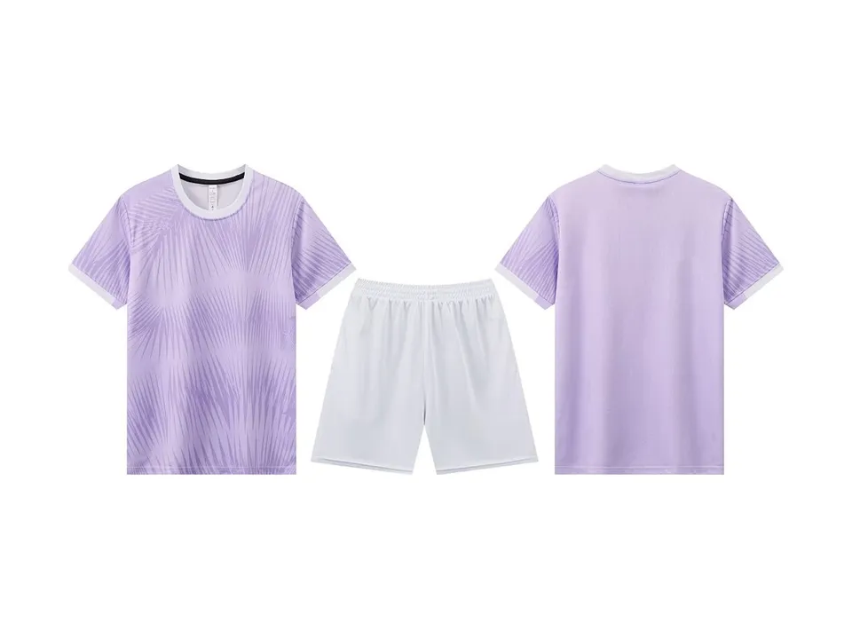
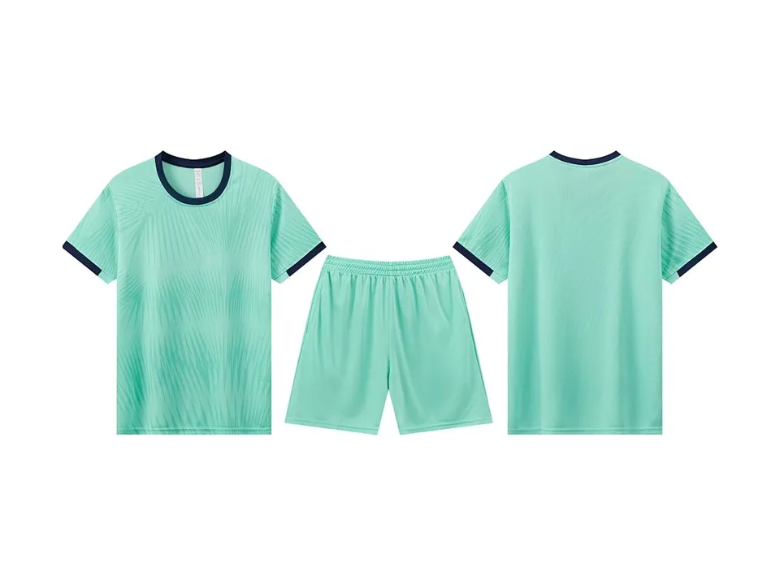
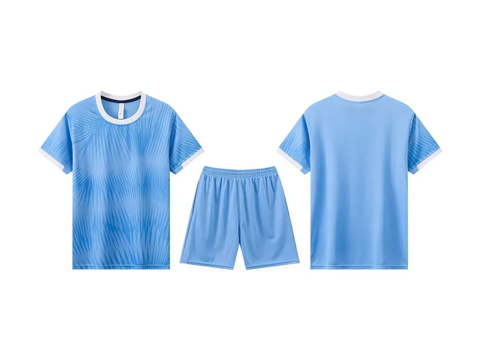
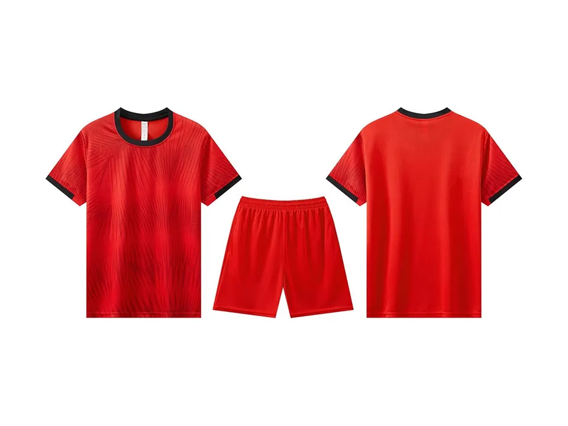
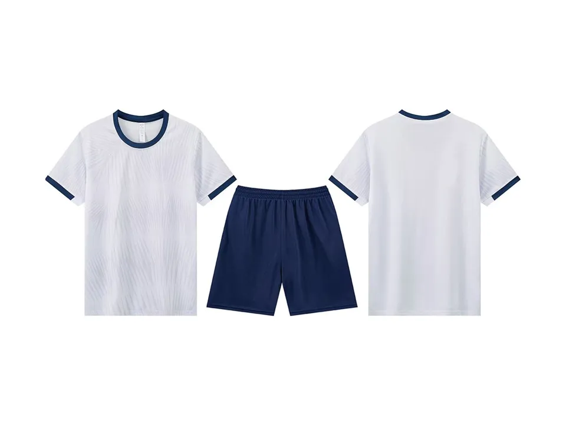

Equipación de fútbol DA11
Camiseta y pantalón con cuello redondo y ondas tono sobre tono por todo el frente; puños con ribete. La personalizamos con vuestro escudo, el patrocinador y el nombre y el dorsal de cada jugador.
Elegir la DA11 y hacer pedido Preguntar por WhatsApp
¿Lo decidís entre todos? Mandarla al grupo o hacer una votación con varias.
Colores de la DA11
La DA11 está en 5 colores. Cada foto es el modelo en blanco: el escudo, el patrocinador, los nombres y los dorsales se añaden en vuestro pedido.





Qué incluye
- Escudo y patrocinador
- Nombre y dorsal de cada jugador
- IVA y envío a España
- Boceto para aprobar antes de pagar
- Desde 10 camisetas, en las tallas que queráis
Tallas de la S a la 4XL (guía de tallas). Cada jugador elige su talla y si quiere camiseta sola o camiseta y pantalón. Las medias no van incluidas.
Cómo se pide
- Elegís modelo y color. Apuntáis la plantilla con nombre, dorsal y talla, y subís el escudo y el logo del patrocinador.
- Os mandamos el boceto por WhatsApp. Hasta aquí no se paga nada.
- Lo aprobáis y pagáis desde el enlace de vuestro pedido. Si queréis cambiar algo, nos lo decís antes.
- Fabricamos y enviamos. Contad con menos de 20 días laborables desde la aprobación.
¿Ningún color encaja con vuestro equipo? Buscad por vuestros colores entre todo el catálogo o la diseñamos a medida.
Otros modelos
Preguntas frecuentes
¿En qué colores está la DA11?
En 5: DA11-1 (blanco y rosa), DA11-2 (celeste), DA11-3 (celeste), DA11-4 (rojo) y DA11-5 (blanco y azul marino).
¿Se puede poner el escudo y el patrocinador en la DA11?
Sí. El escudo, el patrocinador y el nombre y el dorsal de cada jugador van incluidos. Os mandamos un boceto antes de pagar.
¿Hay pedido mínimo?
Sí, 10 camisetas por pedido, en las tallas que queráis.